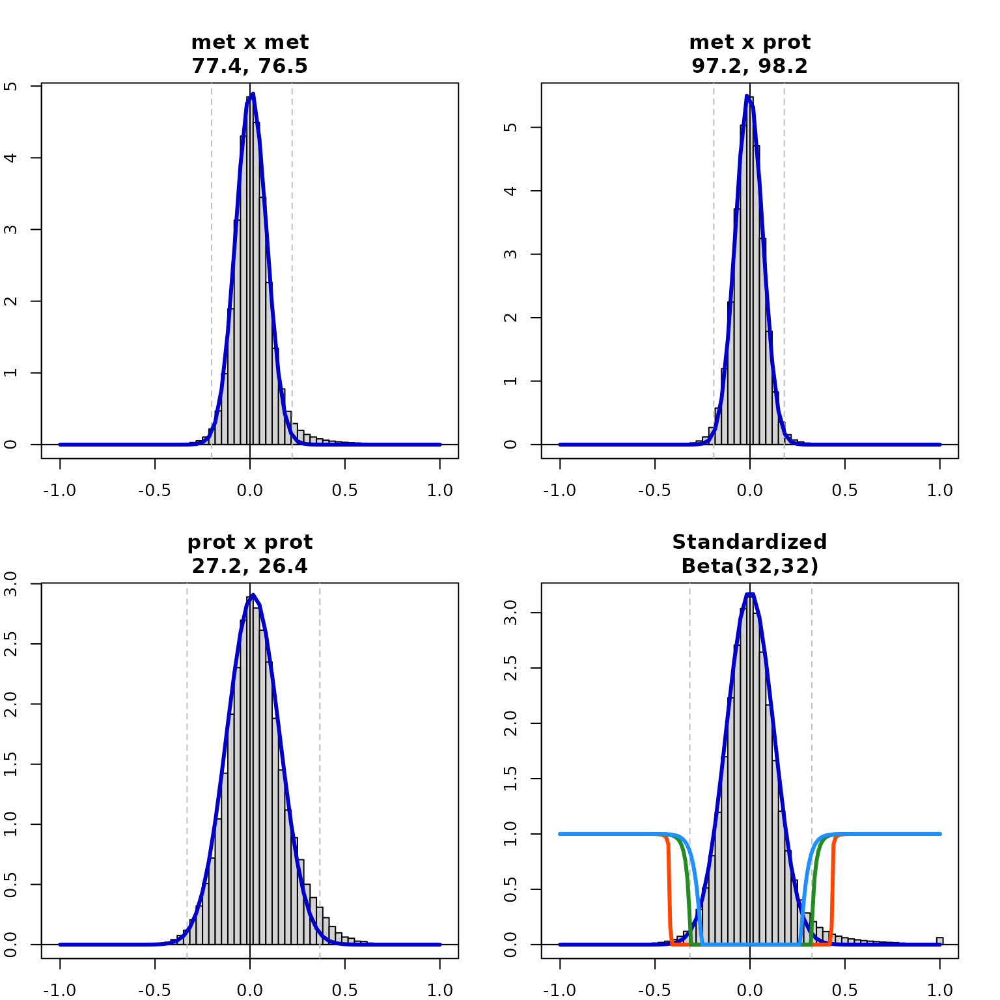
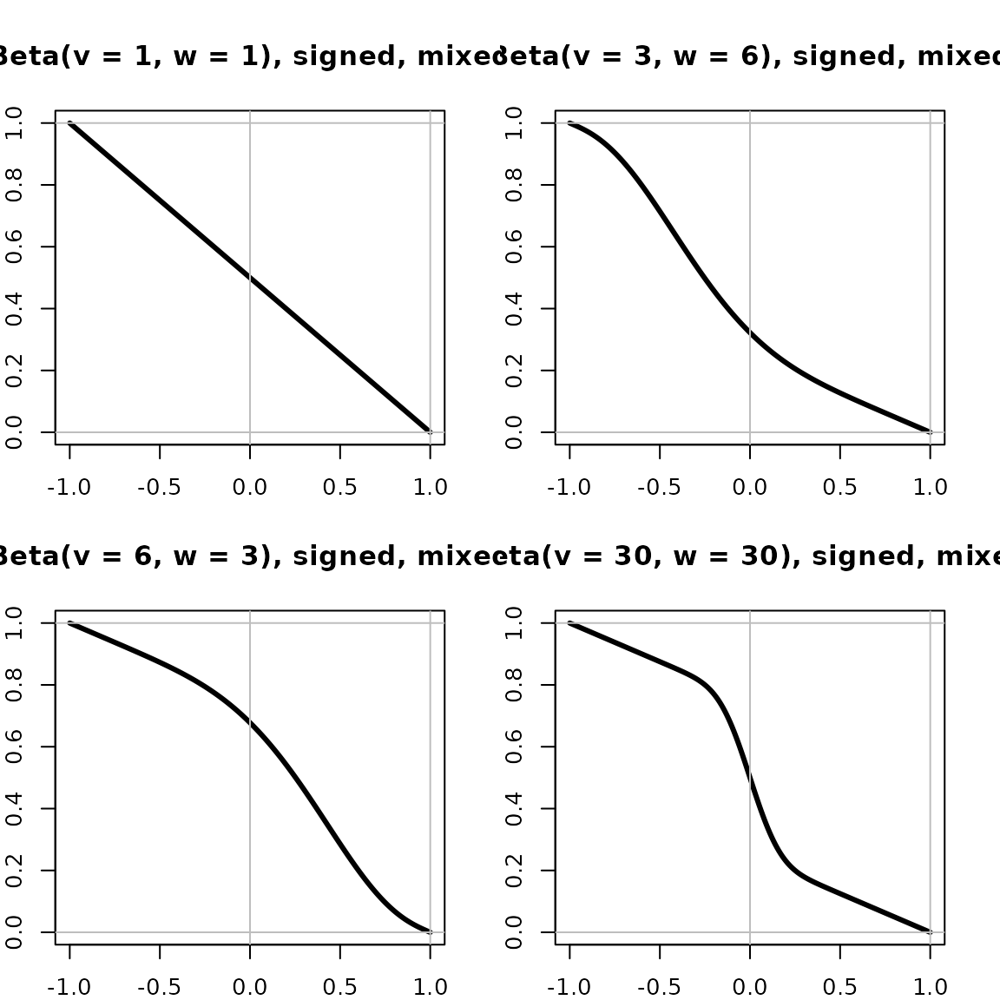

Getting-Started
Getting-Started.Rmd
library(standardcor)
#> Loading required package: qlcMatrix
#> Loading required package: Matrix
#> Loading required package: slam
#> Loading required package: sparsesvd
ls("package:standardcor")
#> [1] "betaDistance" "centerBeta"
#> [3] "e2d" "estimateShape"
#> [5] "euclidDistance" "interpolatedAdjacency"
#> [7] "multiOmicModel" "nullModelAdjacencyTable"
#> [9] "powerDistance" "sigmoidDistance"
#> [11] "SparseSpearmanCor2" "SparsifiedRanks2"
#> [13] "standardizeFromModel" "synth_LC"
#> [15] "ue2d"Estimate Shapes
The first example estimates the parameters of an (asymmetric) Beta distribution from data generated entirely from a null distribution of correlations among vectors of length . Theoretically, this distribution should be ; This example shows that estimateShape() does a good job of fitting this data.
Samples <- 1000
Dimensions <- 50
M <- Matrix(rnorm(Dimensions*Samples),nrow=Dimensions,ncol=Samples,sparse=TRUE)
Z <- SparseSpearmanCor2(M)
beta.shape <- estimateShape(Z[row(Z) < col(Z)], plot=TRUE)
title(paste(round(beta.shape,2),collapse=", "),line=0.5)
#text(x=-0.5,y=2.0,labels=paste("D/2 - 1 = ",round(Dimensions/2-1, 2)),adj = 1/2)
R <- c(-100:100)/100 ; R <-ifelse(-1 < R, ifelse(R < 1, R, 1), -1) # Ensure R in [-1,1]
x <- (1+Z[row(Z) < col(Z)])/2
x.mu <- mean(x)
x.var <- var(x)
z.mm <- x.mu*(1-x.mu) / x.var - 1
v.mm <- x.mu * z.mm
w.mm <- (1-x.mu) * z.mm
lines(R,dbeta((1+R)/2, v.mm, w.mm)/2, lwd=3, col='forestgreen')
text(x=0.5,y=c(2.3,2),
labels=c("Method of Moments",paste("Beta(",round(v.mm, 2),",",round(w.mm,2),")",sep='')),
col='forestgreen',adj = 1/2)The second example below estimates the parameters of a null model for the same data, except that 20% of the vectors are now 50% correlated to each other. These correlations, which are not from the null model, involve 4% of all unique, non-identical pairs. The null model, representing the other 96% of the pairs, should be identical to the previous example. In this example, we can see that the Method of Moments estimate, which is perfectly appropriate for the first example, tries to include all correlations rather than just those from the null model. As a result, the fitted distribution does not reflect the null model very well. In contrast, estimateShape() does much better at modeling just the correlations that are truly from the null model.
Samples <- 1000
Dimensions <- 50
M <- Matrix(rnorm(Dimensions*Samples),nrow=Dimensions,ncol=Samples,sparse=TRUE)
Altered <- 200 # This 5% of the samples are officially "outliers"
r <- 0.5
M[,c(1:Altered)] <- (1-r) * M[,c(1:Altered)] + r*M[,Altered+1]
Z <- SparseSpearmanCor2(M)
beta.shape <- estimateShape(Z[row(Z) < col(Z)], plot=TRUE)
title(paste("Beta(",paste(round(beta.shape,2),collapse=", "),")",sep=''),line=0.5)
#text(x=-0.5,y=2.0,labels=paste("D/2 - 1 = ",round(Dimensions/2-1, 2)),adj = 1/2)
R <- c(-100:100)/100 ; R <-ifelse(-1 < R, ifelse(R < 1, R, 1), -1) # Ensure R in [-1,1]
x <- (1+Z[row(Z) < col(Z)])/2
x.mu <- mean(x)
x.var <- var(x)
z.mm <- x.mu*(1-x.mu) / x.var - 1
v.mm <- x.mu * z.mm
w.mm <- (1-x.mu) * z.mm
lines(R,dbeta((1+R)/2, v.mm, w.mm)/2, lwd=3, col='forestgreen')
text(x=0.5,y=c(2.3,2),
labels=c("Method of Moments",paste("Beta(",round(v.mm, 2),",",round(w.mm,2),")",sep='')),
col='forestgreen',adj = 1/2)In our third example, we show the difference between using the null model directly as a distance versus using the null model as a penalty on top of the typical Euclidean distance corresponding to a corrolation coefficient. The betaDistance() function penalizes correlation coefficients which are likely under the null model, but doesn’t penalize correlation coefficients which are larger than those predicted by the null model. Without including the Euclidean distance, there is essentially no distance between highly correlated pairs; but by including the Euclidean distance, highly correlated pairs can still be separated by their degree of correlation.
v <- mean(beta.shape) # Expect v = (D-1)/2 = 24.5
v.name <- paste("Beta(",paste(round(c(v,v),2),collapse=", "),")",sep='')
plot(R,betaDistance(R, v, v, mix=0), type='l',lwd=3,
xlab="Correlation coefficient", ylab="Distance Penalty",
main = paste(v.name,"penalty"))
abline(h=c(-1:1),col='grey') ; abline(v=c(0,1),col='grey')
Multi-omic data example
Z.met <- SparseSpearmanCor2(as.matrix(synth_LC[['Metabolomics']]))
dim(Z.met)
#> [1] 2647 2647
length(which(is.na(Z.met)))
#> [1] 0
range(Z.met,na.rm=TRUE)
#> [1] -0.8189155 1.0000000
shape.Met <- estimateShape(Z.met[row(Z.met) < col(Z.met)], plot=TRUE)
title(paste('Metabolite correlations',paste(round(shape.Met,2),collapse=", ")),line=0.5)
Z.prot <- SparseSpearmanCor2(as.matrix(synth_LC[['Proteomics']]))Proteomics correlation matrix 284 x 284
0 na values
-0.641119940479762 <= cor <= 1
shape.prot <- estimateShape(Z.prot[row(Z.prot) < col(Z.prot)], plot=TRUE)
title(paste('Protein correlations',paste(round(shape.prot,2),collapse=", ")),line=0.5)
N <- dim(synth_LC[['Metabolomics']])[2]
Met <- as.matrix(synth_LC[['Metabolomics']][,2:N])
rownames(Met) <- synth_LC[['Metabolomics']]$subjectID
N <- dim(synth_LC[['Proteomics']])[2]
Prot <- as.matrix(synth_LC[['Proteomics']][,2:N])
rownames(Prot) <- synth_LC[['Proteomics']]$subjectID
par(mar = c(2, 2, 4, 2), mfrow=c(2,2))
L <- multiOmicModel(list(met = Met, prot = Prot), plot=TRUE, annotate=TRUE, fine=30)
v.std <- 32
Z <- standardizeFromModel(L$modelL, L$analyteL, v.std)
adjTable1 <- nullModelAdjacencyTable(Z[row(Z) < col(Z)], v.std, scale=1)
adjTable2 <- nullModelAdjacencyTable(Z[row(Z) < col(Z)], v.std)
adjTable3 <- nullModelAdjacencyTable(Z[row(Z) < col(Z)], v.std, scale=3)
shape <- estimateShape(Z[row(Z) < col(Z)], plot=TRUE, main = "Standardized", fine=30)
title(paste("Beta(",v.std,",",v.std,")",sep=''), line = 0.5)
Bs <- c(-100:100)/100
lines(Bs,interpolatedAdjacency(Bs,adjTable1),lwd=3,col='orangered')
lines(Bs,interpolatedAdjacency(Bs,adjTable2),lwd=3,col='forestgreen')
lines(Bs,interpolatedAdjacency(Bs,adjTable3),lwd=3,col='dodgerblue')
Beta distance function
R <- c(-100:100)/100 ; R <- ifelse(R < -1, -1, ifelse(1 < R, 1, R))
par(mar = c(2, 2, 4, 2), mfrow=c(2,2))
plot(R,betaDistance(R,1,1,mix=0,unsigned=FALSE),type='l',lwd=3, ylim=c(0,1),
xlab="Correlation coefficient", ylab="Beta Distance",
main = "Beta(v = 1, w = 1), signed, unmixed")
abline(h=c(-1:1),col='grey') ; abline(v=c(0,1),col='grey')
plot(R,betaDistance(R, 3, 6, mix=0, unsigned=FALSE),type='l',lwd=3, ylim=c(0,1),
xlab="Correlation coefficient", ylab="Beta Distance",
main = "Beta(v = 3, w = 6), signed, unmixed")
abline(h=c(-1:1),col='grey') ; abline(v=c(0,1),col='grey')
plot(R,betaDistance(R, 6, 3, mix=0,unsigned=FALSE),type='l',lwd=3, ylim=c(0,1),
xlab="Correlation coefficient", ylab="Beta Distance",
main = "Beta(v = 6, w = 3), signed, unmixed")
abline(h=c(-1:1),col='grey') ; abline(v=c(0,1),col='grey')
plot(R,betaDistance(R, 30, 30,mix=0,unsigned=FALSE),type='l',lwd=3, ylim=c(0,1),
xlab="Correlation coefficient", ylab="Beta Distance",
main = "Beta(v = 30, w = 30), signed, unmixed")
abline(h=c(-1:1),col='grey') ; abline(v=c(0,1),col='grey')
R <- c(-100:100)/100 ; R <- ifelse(R < -1, -1, ifelse(1 < R, 1, R))
par(mar = c(2, 2, 4, 2), mfrow=c(2,2))
plot(R,betaDistance(R,1,1,mix=1,unsigned=FALSE),type='l',lwd=3,
xlab="Correlation coefficient", ylab="Beta Distance",
main = "Beta(v = 1, w = 1), signed, mixed")
abline(h=c(-1:1),col='grey') ; abline(v=c(0,1),col='grey')
plot(R,betaDistance(R, 3, 6, mix=1, unsigned=FALSE),type='l',lwd=3,
xlab="Correlation coefficient", ylab="Beta Distance",
main = "Beta(v = 3, w = 6), signed, mixed")
abline(h=c(-1:1),col='grey') ; abline(v=c(0,1),col='grey')
plot(R,betaDistance(R, 6, 3, mix=1,unsigned=FALSE),type='l',lwd=3,
xlab="Correlation coefficient", ylab="Beta Distance",
main = "Beta(v = 6, w = 3), signed, mixed")
abline(h=c(-1:1),col='grey') ; abline(v=c(0,1),col='grey')
plot(R,betaDistance(R, 30, 30,mix=1,unsigned=FALSE),type='l',lwd=3,
xlab="Correlation coefficient", ylab="Beta Distance",
main = "Beta(v = 30, w = 30), signed, mixed")
abline(h=c(-1:1),col='grey') ; abline(v=c(0,1),col='grey')
R <- c(-100:100)/100 ; R <- ifelse(R < -1, -1, ifelse(1 < R, 1, R))
par(mar = c(2, 2, 4, 2), mfrow=c(2,2))
plot(R,betaDistance(R,1,1,mix=0),type='l',lwd=3, ylim=c(0,1),
xlab="Correlation coefficient", ylab="Beta Distance",
main = "Beta(v = 1, w = 1), unsigned, unmixed")
abline(h=c(-1:1),col='grey') ; abline(v=c(0,1),col='grey')
plot(R,betaDistance(R, 3, 6, mix=0),type='l',lwd=3, ylim=c(0,1),
xlab="Correlation coefficient", ylab="Beta Distance",
main = "Beta(v = 3, w = 6), unsigned, unmixed")
abline(h=c(-1:1),col='grey') ; abline(v=c(0,1),col='grey')
plot(R,betaDistance(R, 6, 3, mix=0),type='l',lwd=3, ylim=c(0,1),
xlab="Correlation coefficient", ylab="Beta Distance",
main = "Beta(v = 6, w = 3), unsigned, unmixed")
abline(h=c(-1:1),col='grey') ; abline(v=c(0,1),col='grey')
plot(R,betaDistance(R, 30, 30,mix=0),type='l',lwd=3, ylim=c(0,1),
xlab="Correlation coefficient", ylab="Beta Distance",
main = "Beta(v = 30, w = 30), unsigned, unmixed")
abline(h=c(-1:1),col='grey') ; abline(v=c(0,1),col='grey')
R <- c(-100:100)/100 ; R <- ifelse(R < -1, -1, ifelse(1 < R, 1, R))
par(mar = c(2, 2, 4, 2), mfrow=c(2,2))
plot(R,betaDistance(R,1,1),type='l',lwd=3, ylim=c(0,1),
xlab="Correlation coefficient", ylab="Beta Distance",
main = "Beta(v = 1, w = 1), unsigned, mixed")
abline(h=c(-1:1),col='grey') ; abline(v=c(0,1),col='grey')
plot(R,betaDistance(R, 3, 6),type='l',lwd=3, ylim=c(0,1),
xlab="Correlation coefficient", ylab="Beta Distance",
main = "Beta(v = 3, w = 6), unsigned, mixed")
abline(h=c(-1:1),col='grey') ; abline(v=c(0,1),col='grey')
plot(R,betaDistance(R, 6, 3),type='l',lwd=3, ylim=c(0,1),
xlab="Correlation coefficient", ylab="Beta Distance",
main = "Beta(v = 6, w = 3), unsigned, mixed")
abline(h=c(-1:1),col='grey') ; abline(v=c(0,1),col='grey')
plot(R,betaDistance(R, 30, 30),type='l',lwd=3, ylim=c(0,1),
xlab="Correlation coefficient", ylab="Beta Distance",
main = "Beta(v = 30, w = 30), unsigned, mixed")
abline(h=c(-1:1),col='grey') ; abline(v=c(0,1),col='grey')Power distance function
R <- c(-100:100)/100 ; R <- ifelse(R < -1, -1, ifelse(1 < R, 1, R))
par(mar = c(2, 2, 4, 2), mfrow=c(2,2))
plot(R,powerDistance(R,k=3,unsigned=FALSE),type='l',lwd=3, ylim=c(0,1),
xlab="Correlation coefficient", ylab="Power Distance",
main = "k = 3, unsigned")
abline(h=c(-1:1),col='grey') ; abline(v=c(0,1),col='grey')
plot(R,powerDistance(R,k=6, unsigned=FALSE),type='l',lwd=3, ylim=c(0,1),
xlab="Correlation coefficient", ylab="Power Distance",
main = "k = 6, unsigned")
abline(h=c(-1:1),col='grey') ; abline(v=c(0,1),col='grey')
plot(R,powerDistance(R,k=12, unsigned=FALSE),type='l',lwd=3, ylim=c(0,1),
xlab="Correlation coefficient", ylab="Power Distance",
main = "k = 12, unsigned")
abline(h=c(-1:1),col='grey') ; abline(v=c(0,1),col='grey')
plot(R,powerDistance(R,k=0.5, unsigned=FALSE),type='l',lwd=3, ylim=c(0,1),
xlab="Correlation coefficient", ylab="Power Distance",
main = "k = 0.5, unsigned")
abline(h=c(-1:1),col='grey') ; abline(v=c(0,1),col='grey')
R <- c(-100:100)/100 ; R <- ifelse(R < -1, -1, ifelse(1 < R, 1, R))
par(mar = c(2, 2, 4, 2), mfrow=c(2,2))
plot(R,powerDistance(R,k=3),type='l',lwd=3, ylim=c(0,1),
xlab="Correlation coefficient", ylab="Power Distance",
main = "k = 3, unsigned")
abline(h=c(-1:1),col='grey') ; abline(v=c(0,1),col='grey')
plot(R,powerDistance(R,k=6),type='l',lwd=3, ylim=c(0,1),
xlab="Correlation coefficient", ylab="Power Distance",
main = "k = 6, unsigned")
abline(h=c(-1:1),col='grey') ; abline(v=c(0,1),col='grey')
plot(R,powerDistance(R,k=12),type='l',lwd=3, ylim=c(0,1),
xlab="Correlation coefficient", ylab="Power Distance",
main = "k = 12, unsigned")
abline(h=c(-1:1),col='grey') ; abline(v=c(0,1),col='grey')
plot(R,powerDistance(R,k=0.5),type='l',lwd=3, ylim=c(0,1),
xlab="Correlation coefficient", ylab="Power Distance",
main = "k = 0.5, unsigned")
abline(h=c(-1:1),col='grey') ; abline(v=c(0,1),col='grey')
Sigmoid distance function
R <- c(-100:100)/100 ; R <- ifelse(R < -1, -1, ifelse(1 < R, 1, R))
par(mar = c(2, 2, 4, 2), mfrow=c(2,2))
plot(R,sigmoidDistance(R,alpha=5,tau0 = 0,unsigned=FALSE),type='l',lwd=3,
xlab="Correlation coefficient", ylab="Sigmoid Distance",
main = "sigmoid(5, 0), unsigned",ylim=c(0,1))
abline(v=c(-1:1),col='grey') ; abline(h=c(0,1),col='grey')
abline(h=0.5, lty=2, col='grey')
plot(R,sigmoidDistance(R,alpha=5,tau0 = 1,unsigned=FALSE),type='l',lwd=3,
xlab="Correlation coefficient", ylab="Sigmoid Distance",
main = "sigmoid(5, 1), unsigned",ylim=c(0,1))
abline(v=c(-1:1),col='grey') ; abline(h=c(0,1),col='grey')
abline(h=0.5, lty=2, col='grey')
plot(R,sigmoidDistance(R,alpha=25,tau0 = -0.5,unsigned=FALSE),type='l',lwd=3,
xlab="Correlation coefficient", ylab="Sigmoid Distance",
main = "sigmoid(25, -1/2), unsigned",ylim=c(0,1))
abline(v=c(-1:1),col='grey') ; abline(h=c(0,1),col='grey')
abline(h=0.5, lty=2, col='grey')
plot(R,sigmoidDistance(R,alpha=5,tau0 = 1,unsigned=FALSE, stretch=TRUE),type='l',lwd=3,
xlab="Correlation coefficient", ylab="Sigmoid Distance",
main = "sigmoid(5, 1), unsigned, stretched",ylim=c(0,1))
abline(v=c(-1:1),col='grey') ; abline(h=c(0,1),col='grey')
abline(h=0.5, lty=2, col='grey')
R <- c(-100:100)/100 ; R <- ifelse(R < -1, -1, ifelse(1 < R, 1, R))
par(mar = c(2, 2, 4, 2), mfrow=c(2,2))
plot(R,sigmoidDistance(R,alpha=4,tau0 = 1/4,unsigned=FALSE),type='l',lwd=3,
xlab="Correlation coefficient", ylab="Sigmoid Distance",
main = "sigmoid(4, 1/4), unsigned",ylim=c(0,1))
abline(v=c(-1:1),col='grey') ; abline(h=c(0,1),col='grey')
abline(h=0.5, lty=2, col='grey')
plot(R,sigmoidDistance(R,alpha=10,tau0 = -1/4,unsigned=FALSE),type='l',lwd=3,
xlab="Correlation coefficient", ylab="Sigmoid Distance",
main = "sigmoid(10, -1/4), unsigned",ylim=c(0,1))
abline(v=c(-1:1),col='grey') ; abline(h=c(0,1),col='grey')
abline(h=0.5, lty=2, col='grey')
plot(R,sigmoidDistance(R,alpha=20,tau0 = 1/4,unsigned=FALSE),type='l',lwd=3,
xlab="Correlation coefficient", ylab="Sigmoid Distance",
main = "sigmoid(20, 1/4), unsigned",ylim=c(0,1))
abline(v=c(-1:1),col='grey') ; abline(h=c(0,1),col='grey')
abline(h=0.5, lty=2, col='grey')
plot(R,sigmoidDistance(R,alpha=100,tau0 = -1/4,unsigned=FALSE),type='l',lwd=3,
xlab="Correlation coefficient", ylab="Sigmoid Distance",
main = "sigmoid(100, -1/4), unsigned",ylim=c(0,1))
abline(v=c(-1:1),col='grey') ; abline(h=c(0,1),col='grey')
abline(h=0.5, lty=2, col='grey')
R <- c(-100:100)/100 ; R <- ifelse(R < -1, -1, ifelse(1 < R, 1, R))
par(mar = c(2, 2, 4, 2), mfrow=c(2,2))
plot(R,sigmoidDistance(R,alpha=1,tau0 = 1/2,unsigned=TRUE,stretch=TRUE),type='l',lwd=3,
xlab="Correlation coefficient", ylab="Sigmoid Distance",
main = "sigmoid(1, 1/2), unsigned, stretched",ylim=c(0,1))
abline(v=c(-1:1),col='grey') ; abline(h=c(0,1),col='grey')
abline(h=0.5, lty=2, col='grey')
plot(R,sigmoidDistance(R,alpha=8,tau0 = 1,unsigned=TRUE,stretch=TRUE),type='l',lwd=3,
xlab="Correlation coefficient", ylab="Sigmoid Distance",
main = "sigmoid(8, 1), unsigned, stretched",ylim=c(0,1))
abline(v=c(-1:1),col='grey') ; abline(h=c(0,1),col='grey')
abline(h=0.5, lty=2, col='grey')
plot(R,sigmoidDistance(R,alpha=4,tau0 = 0,unsigned=TRUE,stretch=TRUE),type='l',lwd=3,
xlab="Correlation coefficient", ylab="Sigmoid Distance",
main = "sigmoid(4, 0), unsigned, stretched",ylim=c(0,1))
abline(v=c(-1:1),col='grey') ; abline(h=c(0,1),col='grey')
abline(h=0.5, lty=2, col='grey')
plot(R,sigmoidDistance(R,alpha=100,tau0 = 1/10,unsigned=TRUE,stretch=TRUE),type='l',lwd=3,
xlab="Correlation coefficient", ylab="Sigmoid Distance",
main = "sigmoid(100, 1/10), unsigned, stretched",ylim=c(0,1))
abline(v=c(-1:1),col='grey') ; abline(h=c(0,1),col='grey')
abline(h=0.5, lty=2, col='grey')